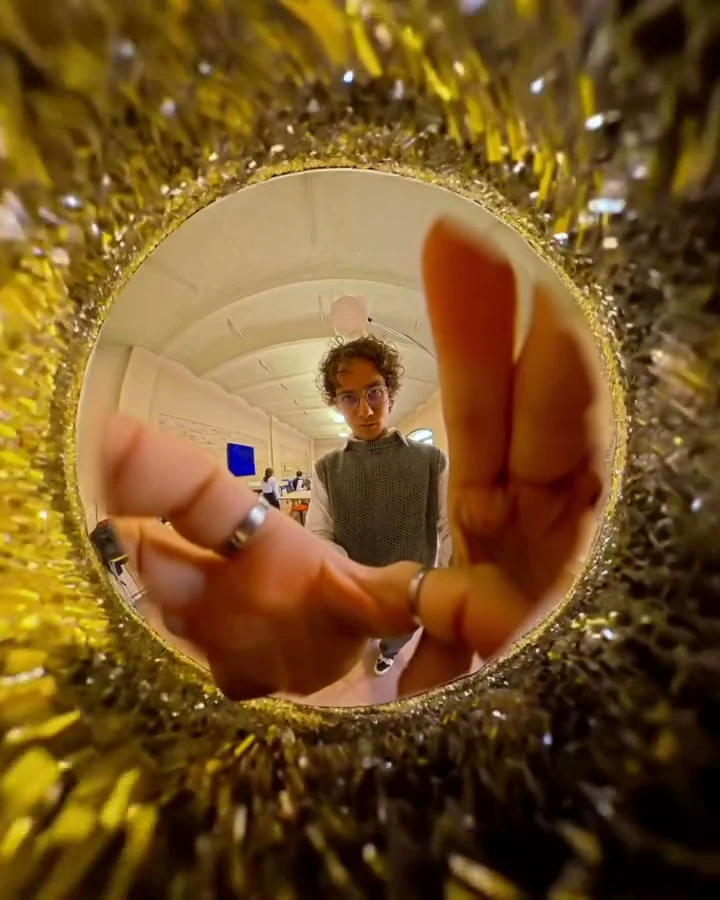
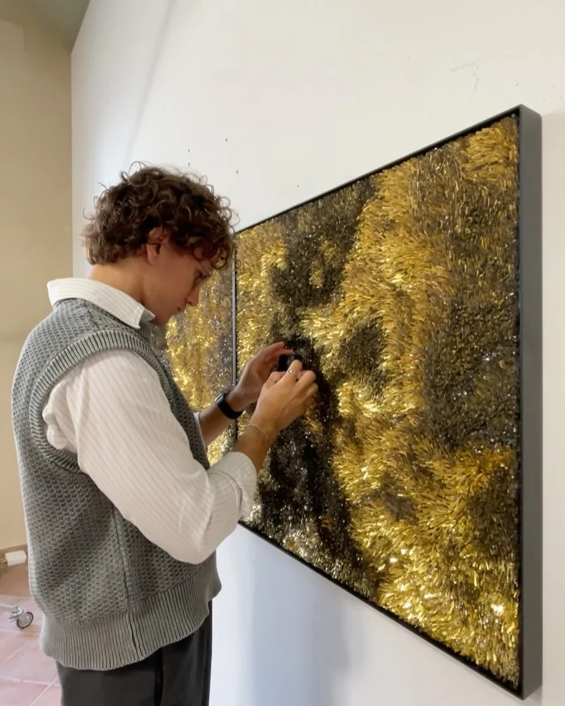
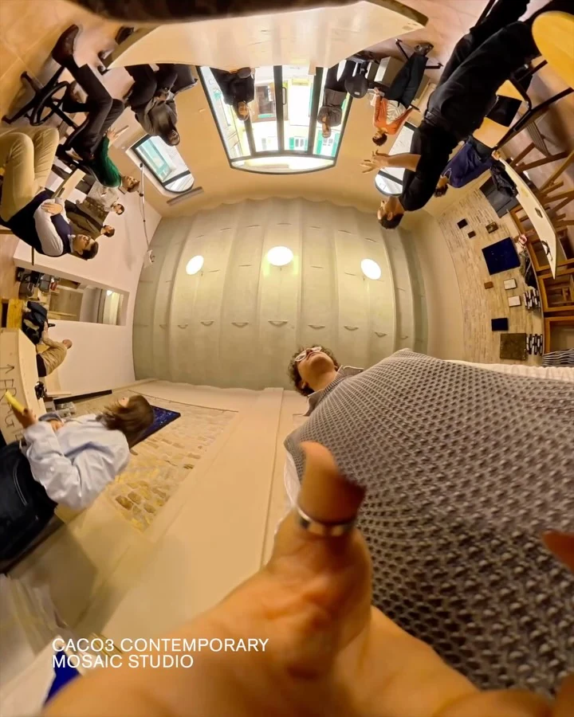
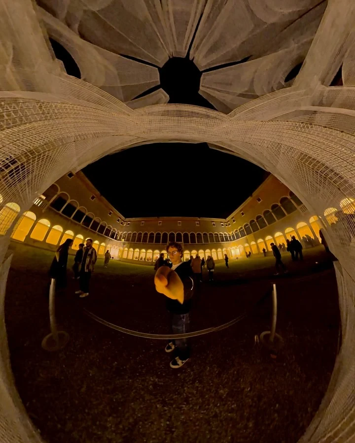

Meeting the artists with Irene Diliberto added another layer to the work, giving a voice to the worlds behind each piece.
Contemporary Mosaic Biennale
Cultural documentation · 2025
I documented the Contemporary Mosaic Biennale at MAR in Ravenna with Kreativehouse. What interested me most was the mix: design and art, younger and established voices, different ways of working with the same medium.




Exhibition views and behind the scenes at MAR Ravenna.
Credits
- Visual documentation
- Mattia Giannattasio
- Museum
- MAR Ravenna
- Project
- Kreativehouse
- Artist encounters with
- Irene Diliberto